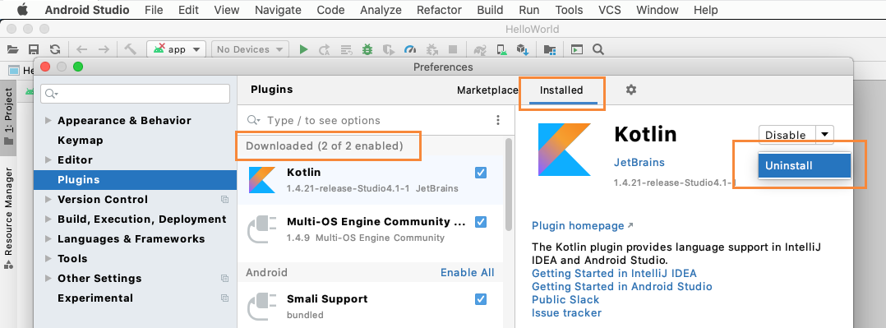
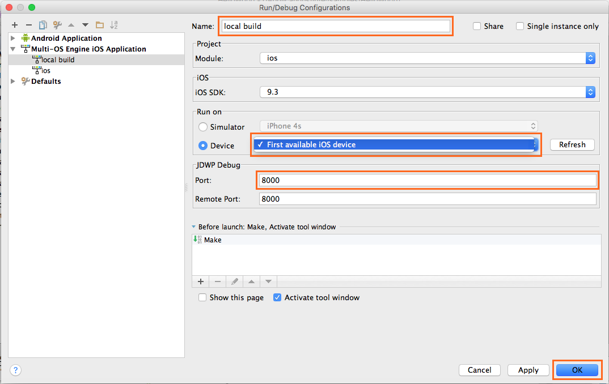

Creating a Hello World App for Android and iOS Devices¶
Contents:
This topic helps you create your first cross-platform app using the Intel’s Multi-OS Engine Technology Preview. It also helps you understand the concepts of Apple iOS* app development using the Multi-OS Engine.
It shows you how to create a simple Hello World app for Android* and iOS devices that use shared common logic code that gets used by both app modules.
Overall Workflow¶
An app created with the Multi-OS Engine consists of three modules:
Android module - contains only Android specific code.
iOS module - implements the functionality specific for your iOS app (that is mostly UI). The code accesses the native API through Objective-C*/Java bindings generated by the special tool called NatJGen. To learn how to use third-party native libraries for developing your iOS app, see the Using Third Party Native Libraries for iOS* topic.
Common module - contains the shared logic that is common for the Android and iOS parts.
This approach creates apps with the common logic code along with platform specific UI code.
The workflow for creating an Multi-OS Engine app includes these steps:
Create an Android app module.
Create a Multi-OS Engine app module, which is actually your iOS app.
Create a common module that holds the common app logic for Android and iOS parts.
Add the common module as a dependency for the Android and iOS app modules.
Configure the Gradle* scripts.
Build and launch the app.
Creating an Android App Module¶
Launch Android Studio and create an Android project.
Enter the app name, company domain and choose a location where you want to save your project. Pay attention and feel free to revise the auto-generated placeholder package name (com.mycompany.myfirstapp) in lower case. Click Next.
To just get started, simply proceed with the default settings by clicking Next.
Configure your target device and API level settings. For this tutorial, simply proceed with the default settings by clicking Next.
Choose Empty Activity in the Add an activity to Mobile window and click Next.
In the Customize the Activity window, you may wish to leave the settings unchanged. Click Finish to accept the default configuration. Wait while your app is built as a new project.
When it completes, Android Studio creates a new Android project. In the Project pane, notice the app module - this module is your Android app.
You can now add a Multi-OS Engine module, which is actually your iOS app.
Creating a Multi-OS Engine App Module¶
Right click anywhere inside the Project tab on the left side. This creates the module in the root of the Android project. Choose New and New Module.
Note
If you are using Android Studio and no “New Module” dialog popped up, make sure you did not install any Kotlin plugin update and use the Kotlin plugin bundled with the Android Studio. You could check this by openning the Plugins settings and see if there is Kotlin plugin under the “Downloaded” category. If so, uninstall it and restart the IDE to use the bundled version instead.
There are six available templates:
Master-Detail Application with storyboard template provides a starting point for a master-detail app. It provides a user interface configured with a navigation controller to display a list of items and also a split view on iPad devices.
Single-View Application template provides a starting point for an app that uses a single view. It provides a view controller to manage the view, and a storyboard or nib file that contains the view.
Game template provides a starting point for games.
These templates mirror the standard Xcode templates for iOS and have the same names as the corresponding templates in Xcode. Using these templates, you can see how your Apple Objective-C* project migrates to a Multi-OS Engine solution: the plug-in replaces all Objective-C components with Java analogues when possible.
Select the template which fits your needs (such as Single-View Application) and press Next.
In the next window, create an Xcode project. After you create the project you can open it in Xcode, for example, if you would like to use an Xcode storyboard to design your native user interface. Specify the Project Name (app name), Package Name (where your Java code belongs to), Organization Name and Identifier.
Click Next to configure the iOS module. Specify a Module name and review the Content root and Module file location. When you complete this, click Finish.
5. Now you have created an iOS app in Android Studio. If Android Studio prompts you to synchronize the Gradle scripts, please do so. Multi-OS Engine plugin automatically creates the default run configuration. Click “run button” to run sample on simulator by default or click “debug” to run debugging.
Creating a common module for Android and iOS¶
This section describes how to create a Common module that holds app logic and adds it as a dependency to the iOS* and Android modules.
Let’s create the Common module from the scratch. Right click in the left side of the Project tab to create the module in the root folder of the Android project. Then choose “New” and “Module”.
Choose “Java Library” from modules list and click “Next”. Fill in the fields and click on “Finish” button
Wait for the new module to be created including the Gradle synch.
You can now add the common module as a dependency of the iOS and Android modules.
Add a Dependency for the iOS module:¶
Right click the iOS module and choose “Open Module Settings”. Choose “iOS” module in the Project Structure window. Click “+”” and choose “Module dependency”.
Click the common module from the module list to add it as a dependency for the iOS module.
Add a Dependency for the Android module:¶
The steps are similar to the previous steps for the iOS module. The only difference is that in the Project structure window, you need to select the “Dependencies” tab.
Running and Debugging Your Multi-OS Engine App¶
You can run the app created with Multi-OS Engine on the simulator or a real device. To do this, create a run/debug configuration specific to the platform to run on.
Creating Run/Debug Configurations:
When you creates an Apple iOS app module, the Multi-OS Engine plug-in automatically creates the list of default run configurations. Click Select Run/Debug Configuration and select “Edit Configurations…” to create platform-specific configuration based on one of the default Multi-OS Engine configurations.
Click “+” and choose “Multi-OS Engine iOS Application”
Specify the configuration name. Also:
Choose an available iOS SDK version. Choose the type of Simulator device or connected Device to run. Choose a debug port.
For a real device:
For the simulator:
Running and Debugging Multi-OS Engine App¶
Click Run to run or Debug to run debugging the app code on the simulator or a real device (if connected and configured).
Building IPA to Deploy App to AppStore¶
Building an IPA is currently possible from the command line using Gradle. In the Multi-OS Engine module execute the following command:
./gradlew moeIpaBuild
The IPA file will be created in the build/ folder.
For more information about the Multi-OS Engine Gradle plugin, please refer to the plugin documentation.